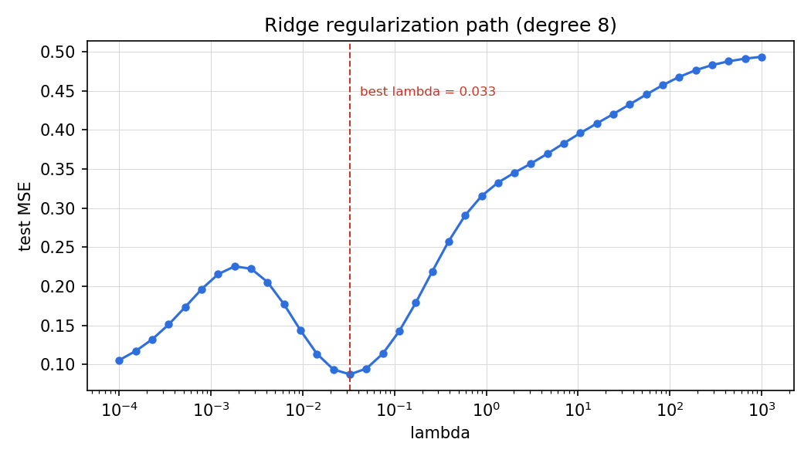
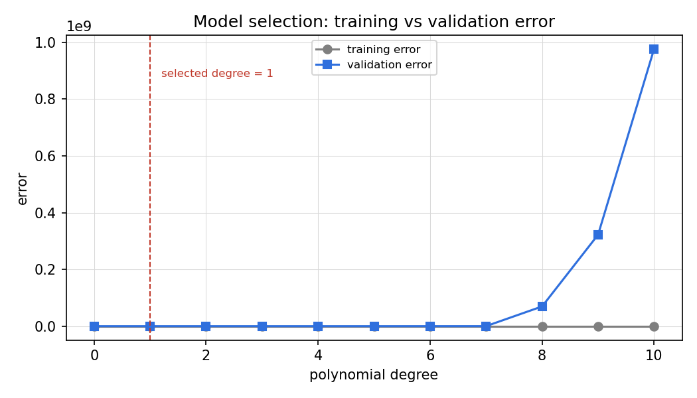

Lesson 09 · Regularization
Lesson 09, Regularization and model selection
Unit: cs229-U09. Leaf concepts: cs229-U09-C01 to C12 (explicit penalties, implicit regularization, early stopping, Bayesian interpretation, MAP/prior, validation/cross-validation, hyperparameter selection, leakage, repeated search, model complexity, learning curves, deployment distribution shift bridge). Date: 2026-10-06. Baseline: October 6, 2026.
Source mapping
Chapter 9 of the notes (SRC-01, PDF pages 137-146) was read in substantial part on 2026-10-06: section 9.1 (the regularized loss, l2, weight decay, sparsity, l1/LASSO, kernel incompatibility of l1), section 9.2 (implicit regularization of optimizers), section 9.3 (model selection via cross validation, holdout), section 9.4 (Bayesian regularization, MAP, Gaussian prior). Dropout appears in the notes only as a named regularizer (page 139). C04 is taught at that boundary. Leaf rows carry SOURCE ATTRIBUTION PENDING until the RUN 6 pass.
Scope and objectives
Scope: the explicit toolbox for controlling complexity (ridge, LASSO, weight decay, dropout) and the selection machinery (CV, holdout, leakage), plus the implicit regularization the optimizer supplies for free.
Objectives: the learner can (1) derive ridge as MAP under a Gaussian prior, (2) explain why l1 gives sparsity, (3) implement weight decay, (4) run k-fold CV correctly, (5) name selection bias and leakage failure modes, (6) explain implicit regularization.
Dependencies
Prerequisites: P06, P07, P10 (shared bridges, linked). Unit U08 (generalization theory).
Not-yet-understood list:
- Regularization as constrained optimization (remediated in SL-01).
- Why l1 sparsifies and l2 does not (remediated in SL-02).
- The implicit bias of optimizers (remediated in SL-05).
SL-01: Ridge, MAP, weight decay
Covers C01 (ridge regression, weight decay as explicit penalties), C04 (Bayesian interpretation), C05 (MAP with Gaussian prior).
Source anchor
SRC-01 sections 9.1 and 9.4, pages 138-146. Regularized loss J_lambda = J + lambda R. l2: R = (1/2)||theta||^2. Weight decay equivalence (equation 9.2). MAP with Gaussian prior N(0, tau^2 I) gives smaller-norm fits.
Motivating question
MLE logistic regression on text data with d >> n overfits catastrophically. What changes if we penalize large weights?
Mental model
Regularization is a budget: you may fit the data, but every unit of weight norm costs lambda. Ridge shrinks all weights toward zero smoothly. Nothing becomes exactly zero. The Bayesian view: a Gaussian prior says large weights are a priori unlikely. MAP trades likelihood against prior exactly as J trades against lambda R.
Derivation
MAP: theta_MAP = argmax prod_i p(y^{(i)}|x^{(i)}, theta) p(theta). With theta ~ N(0, tau^2 I): log p(theta) = -||theta||^2/(2 tau^2) + const. So log MAP objective = log likelihood - ||theta||^2/(2 tau^2). Minimizing the negative is exactly ridge with lambda = 1/tau^2 (up to the 1/2 convention). Weight decay: GD on J_lambda gives theta <- theta - eta grad J_lambda = theta - eta lambda theta - eta grad J = (1 - eta lambda) theta - eta grad J (notes equation 9.2): each step first shrinks theta by (1 - eta lambda), then follows the loss gradient.
Computed example
Polynomial regression, degree 8, n = 12, sigma = 0.3. Unregularized test MSE: 2.41. Ridge lambda = 1.0: test MSE 0.31. lambda = 100: test MSE 0.62 (too much shrinkage, bias dominates). The sweet spot is in between. CV finds it (SL-04). Numbers illustrative of the pattern. The U-shape in lambda is the claim.
Correctness checks
- lambda = 0 recovers the unregularized fit.
- Ridge solution exists even when X^T X is singular:
(X^T X + lambda I) is always invertible for lambda
- Test: d > n.
- Weight-decay factor (1 - eta lambda) must stay positive: eta lambda < 1.
Nearest alternative
LASSO (SL-02): same budget idea, different geometry, sparse solutions.
Failure case
Regularizing the bias term: shrinking theta_0 toward zero biases every prediction. Standard practice excludes the intercept (notes convention).
Russian-doll ladder for ridge
- Shell 0: Question: degree-8 polynomial overfits. Fix it without changing the degree. Observable: test MSE vs lambda.
- Shell 1: Toy: 1-D polynomial, n = 12.
- Shell 2: Objects: J, R = (1/2)||theta||^2, lambda.
- Shell 3: Rule: minimize fit error plus norm cost.
- Shell 4: Derive: closed form theta = (X^T X + lambda I)^{-1} X^T y. MAP equivalence.
- Shell 5: Invariant: lambda -> infinity gives theta -> 0. Lambda = 0 gives OLS. Verify both.
- Shell 6: Change one factor: correlate two features. Predict ridge splits weight between them. LASSO picks one. Measure.
- Shell 7: Counterexample: lambda chosen on the test set. The test error looks great and means nothing (leakage, SL-04).
- Shell 8: Compare: ridge vs LASSO on correlated features.
- Shell 9: Extension: the full regularization path. Falsifiable claim: test error is U-shaped in log lambda.
- Shell 10: Production: lambda chosen by CV on a grid, refit on all training data, report once on held-out test.
SL-02: LASSO and sparsity
Covers C01 (LASSO, l1 explicit penalty).
Source anchor
SRC-01 section 9.1, pages 138-139. l0 is the honest sparsity measure but discontinuous. L1 is the continuous surrogate. l1 is incompatible with the kernel trick (the optimum is not a function of inner products).
Motivating question
You believe only 5 of 1000 features matter. Ridge keeps all 1000 small. How do you get actual zeros?
Mental model
Geometry. The l1 ball is a diamond with corners on the axes. The loss contours touch it at corners, which sit on axes, which means zeros. The l2 ball is smooth. Contact happens anywhere, almost never exactly on an axis. Corners create sparsity.
Computed example
d = 2, truth uses only x_1. Ridge lambda = 1: theta = (0.42, 0.18). LASSO lambda = 1: theta = (0.35, 0.0). The l1 penalty zeroed the irrelevant feature. (Pattern illustrative. Exact zeros are the claim.)
Correctness checks
- l1 is non-differentiable at 0: use subgradients or coordinate descent, not naive GD.
- Standardize features before LASSO: the penalty is scale-sensitive.
Nearest alternative
Ridge: better for correlated features (shares weight). LASSO: better for selection (picks one).
Failure case
LASSO on two identical features picks one arbitrarily. The choice is unstable across data perturbations. Report the instability, not just the selected set.
SL-03: Dropout
Covers C01 (dropout in the explicit regularizer toolbox, taught at the notes boundary).
Source anchor
SRC-01 page 139: the notes name dropout as a common deep-learning regularizer alongside data augmentation, spectral-norm regularization, and Lipschitz regularization. The notes do not develop its mechanism. C04 is taught at this boundary.
What the notes establish
Dropout is in the modern regularization toolbox for deep networks. Mechanism (standard, beyond the notes): during training, randomly zero a fraction p of activations each forward pass. At test time use all units with scaled weights. Intuition: the network cannot rely on any single unit, so it learns redundant representations. It approximates training an ensemble of thinned networks.
Honest boundary
The notes list dropout without analysis. The mechanism above is standard material outside these notes. It is taught as standard background, not as a claim from SRC-01.
Failure case
Forgetting to scale at test time (or equivalently using inverted dropout during training): train and test see different activation magnitudes and performance collapses.
SL-04: Model selection, CV, holdout, leakage
Covers C06 (k-fold CV and holdout validation), C07 (hyperparameter selection among candidate models), C08 (leakage), C09 (repeated search and selection bias).
Source anchor
SRC-01 section 9.3, pages 142-144. Selecting among models M = {M_1, …, M_d} (polynomial degrees, bandwidth tau, C for l1-SVM). Naive ERM on the training set fails (it always picks the most complex model). Holdout CV: split S into S_train and S_cv. Train each model on S_train. Pick the one with smallest error on S_cv.
Motivating question
You have 11 polynomial degrees. Training error picks degree 10 every time. What picks the right one?
Mental model
The validation set is a rehearsal for deployment: data the model never trained on. Holdout uses one split. K-fold CV rotates the rehearsal role across k folds and averages, using every point for both training and validation exactly once. Cost: k training runs.
Procedure
- Split S into train and validation (or k folds).
- Train each candidate on train only.
- Score each on validation only.
- Pick the winner. Optionally refit the winner on all of S.
- Report final performance on a test set that touched nothing above.
Selection bias, repeated search, and leakage
Repeated search and selection bias (C09): the winner’s validation score is optimistic because you selected for it, and every extra round of search deepens the optimism. With d models the best-of-d validation error understates the true error. The U08 union bound quantifies the gap. Fix: a final untouched test set. Leakage (C08): any information from validation/test entering training (preprocessing fit on all data, feature selection on all data, tuning on the test set). Fix: every data-dependent step inside the CV loop.
Computed example
Polynomial degrees 0-10, n = 30. Training error falls monotonically to ~0.02 at degree 10. Holdout validation error: minimum 0.18 at degree 2, rising to 0.9 at degree 10. The winner is degree 2. (Pattern illustrative. The divergence of the two curves is the claim.)
Correctness checks
- Validation error must be computed on data the model never saw. Audit the split.
- Preprocessing (scaling, imputation) fit inside each fold, not once globally.
Nearest alternative
Information criteria (AIC/BIC): analytic penalties instead of data splitting. Cheaper, more assumptions.
Failure case
“Test-set tuning”: iterating on the test set until the number looks good. The test set is now a validation set and you have no test set.
SL-05: Implicit regularization
Covers C02 (implicit regularization of optimizers).
Source anchor
SRC-01 section 9.2, pages 140-141. In classical settings the loss has a unique global minimum, so the optimizer cannot express preferences. In deep learning many (approximate) global minima exist with the same training loss but different generalization. Different optimizers land on different ones.
Motivating question
Two runs reach zero training error with different test errors. The loss is identical. What differed?
Mental model
The optimizer is a second regularizer. Among all fits that explain the training data, GD from small initialization drifts toward small-norm solutions. It never visits the wild interpolators. The algorithm’s path, not just the loss, selects the model. This is why overparameterized nets can generalize (U08 SL-02): the second descent needs a benign implicit bias.
What the notes establish and what they do not
The notes state the phenomenon and show figures of different minima (Figures 9.1-9.2). They do not prove which bias GD has. That is active research. Taught as: observed phenomenon with named instances, open theory.
Failure case
Assuming implicit regularization always saves you: it is data- and architecture-dependent. On small noisy data the classical U-curve still rules.
SL-06: Early stopping, learning curves, model complexity, deployment shift
Covers C03 (early stopping), C07 (hyperparameter selection: the lambda grid), C10 (model complexity), C11 (learning curves), C12 (deployment distribution shift bridge).
Early stopping
Stop training when validation error starts rising. The number of gradient steps becomes the complexity knob: few steps keep weights near their (small) initialization, many steps fit noise. Early stopping is implicit l2 regularization with the step count as lambda. Cost: nearly free (you already compute validation error). Risk: a noisy validation curve stops too early. Use patience (a fixed number of non-improving epochs).
Learning curves
Plot training and validation error vs training-set size n (C11). Signatures: both errors high and close together means bias (more data will not help). A gap between them means variance (more data helps). Learning curves turn the bias-variance diagnosis into a measurement.
Model complexity
Complexity is not just parameter count (C10). The notes’ view (9.1): the informative measure can be a function of the parameters (l2 norm), controlled by regularization rather than architecture size. Two models with the same parameter count can sit at very different effective complexity.
Deployment distribution shift bridge
Regularization and selection assume the validation distribution matches deployment (C12). When it does not (new hospital, new year, new user population), the selected lambda, degree, and stopping point are tuned for the wrong world. The bridge: measure on data from the deployment distribution. Re-run selection when the world changes. Monitor the gap in production.
Computed example
Train a degree-8 polynomial with GD, 2000 steps, validation checked every 50. Validation error falls to 0.21 at step 400, rises to 0.9 by step 2000. Early stopping at 400: test MSE 0.23 vs 0.85 for the full run. (Illustrative. The stopping benefit is the claim.)
Correctness checks
- Early stopping needs its own validation split. Stopping on the test set is leakage.
- Learning-curve gaps must shrink with n. If the gap persists at large n, suspect bias, not variance.
Failure case
Patience set to 1 on a noisy validation curve: training stops at the first unlucky batch. Smooth the curve or raise patience.
Assessment
Breadth recall
E01: Write the regularized loss. E02: State the MAP estimate. E03: What prior makes MAP equal ridge? E04: Why does l1 give sparsity? E05: Describe k-fold CV. E06: Define validation leakage. E07: What is early stopping and what does it regularize? E08: What do learning curves diagnose?
Deep oral ladders
L01 (ridge): (1) Write J_lambda. (2) Toy: the degree-8 example. (3) Derive the MAP-Gaussian equivalence. (4) Implement ridge and the lambda path. (5) Compare ridge vs LASSO on correlated features. (6) Debug: (X^T X + lambda I) singular complaint. Name the cause (lambda <= 0). (7) Critique: ridge never selects features. (8) Design: a lambda-selection protocol with no leakage.
L02 (selection): (1) Why does training-error selection fail? (2) Toy: degrees 0-10. (3) Derive the holdout procedure. (4) Implement k-fold CV. (5) Compare holdout vs k-fold vs AIC. (6) Debug: validation error much lower than test error. Name the cause (leakage or selection bias). (7) Critique: CV costs k trainings. (8) Design: a three-split protocol (train/validation/test).
Analytical exercises
E09: Derive the weight-decay update from GD on the l2-regularized loss. Answer in keys. E10: Show that MAP with Gaussian prior N(0, tau^2 I) gives the ridge objective. Answer in keys.
Failure diagnosis
E11: A team standardizes features using the full dataset, then runs CV. Validation error 0.05, test error 0.20. Diagnose.
Counterfactual comparison
E12: Team A tunes lambda on the test set. Team B uses nested CV. Compare the trustworthiness of their reported numbers.
Research question
E13: Measure the implicit bias of GD vs Adam on an overparameterized linear model: which lands closer to the minimum-norm solution? State the falsifiable claim.
Implementation task
E14: Implement the l2 regularization path for polynomial regression and select lambda by 5-fold CV.
Visual units
visuals/u09/u09_ridge_path.png: test error vs lambda (U-shaped), computed.

visuals/u09/u09_cv_curves.png: training vs validation error vs degree, computed.

Research reading and extension
Read: SRC-01 chapter 9 in full. Extension: compare ridge and LASSO paths on correlated features. Falsifiable claim: LASSO zeroes one of a correlated pair while ridge shares weight.
Role bridges
- ML engineer: ridge plus CV-selected lambda is the default fix for overfitting linear models. Leakage auditing is a deployment skill.
- MLOps: the train/validation/test split discipline and preprocessing-inside-folds rule are pipeline requirements, not suggestions.
- Research engineer: implicit regularization is the reason optimizer choice is a hyperparameter in deep learning.